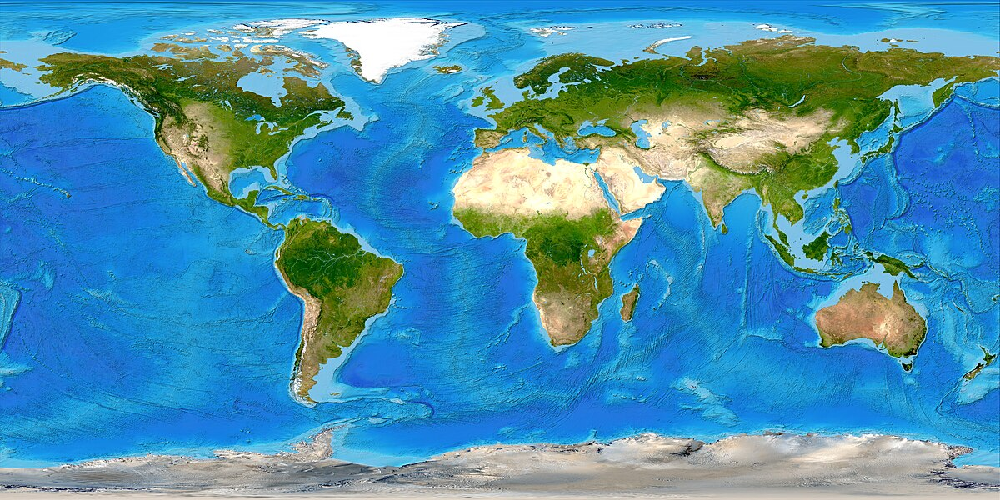

Патувања

На секој човек му треба одмор, да патува негде.
А јас како човек сум патувал многу
Каде сум бил?
- Австрија,
- Хрватска,
- Италија,
- Египет,
- Унгарија,
- И уште повеќе ама немам место..
Најмногу впечаток ми остај Италија, а посебно градот Фиренца. Се заљубив во него и би живеел таму некогаш (дајбоже).
Австрија многу ја сакам исто така. Многу мирна и убава земја плус луѓето многу фини!
И да запамтиме дека Охрид сепак е поскап од овие места 😭
Go Back